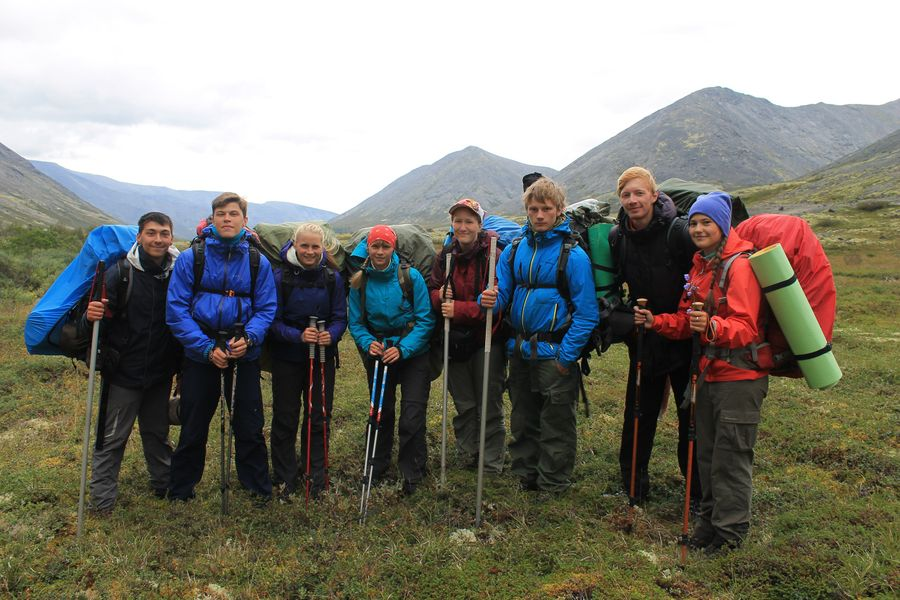
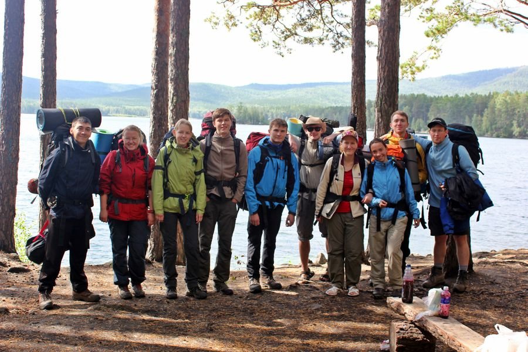

2017
Западный саян, Араданский хребет, 12−30 июля

Участники
слева направоМаршрут
Ссылки
- Никита (я)
- Таня
- Майя
- Марина
- Вова
- Ира
- Антон
- Даниил (фотограф)
Общая информация:
Общая протяженность маршрута — 65,9 км, продолжительность - 12дней/11 ночей.
Средний километраж в день 6,6 км.
Суммарный набор: 3828 м, 383 м /день.
Суммарный сброс: 4829 м, 483 м/день.
Общий маршрут:
г. Н.Новгород – г. Киров – г. Абакан – трасса М-54, 620 км – ходовая часть — 24 км трассы Арадан-Усинск – г. Абакан – г. Киров – г. Н.Новгород.2016
Хибины, 31 июля — 14 августа
Участники
слева направоМаршрут
Ссылки
- Леша
- Антон
- Таня
- Марина
- Маша
- Никита (я)
- Даниил
- Майя
Общая информация:
Общая протяженность маршрута — 61,2 км, продолжительность - 10дней/9 ночей.
Средний километраж в день 6,12 км.
Суммарный набор: 3081 м, 308,1 м /день.
Суммарный сброс: 2732 м, 273,2 м/день.
Общий маршрут:
г. Н.Новгород - г. Москва - ст. Нефелиновые пески - ходовая часть - г. Апатиты - г. Санкт-Петербург - г. Н.Новгород2015
Южный Урал, Нацпарк "Таганай" 10-19 августа
Участники
слева направоМаршрут
Ссылки
- Леша
- Лена
- Оля
- Антон
- Сегрей
- Никита (я)
- Маша
- Таня
- Артем
- Вова
- Маргарита (фотограф)
Общая информация:
Общая протяженность маршрута — 58,1 км, продолжительность - 8 дней/7 ночей.
Средний километраж в день 7,26 км.
Суммарный набор: 1158 м, 145 м /день.
Суммарный сброс: 1281 м, 160 м/день.